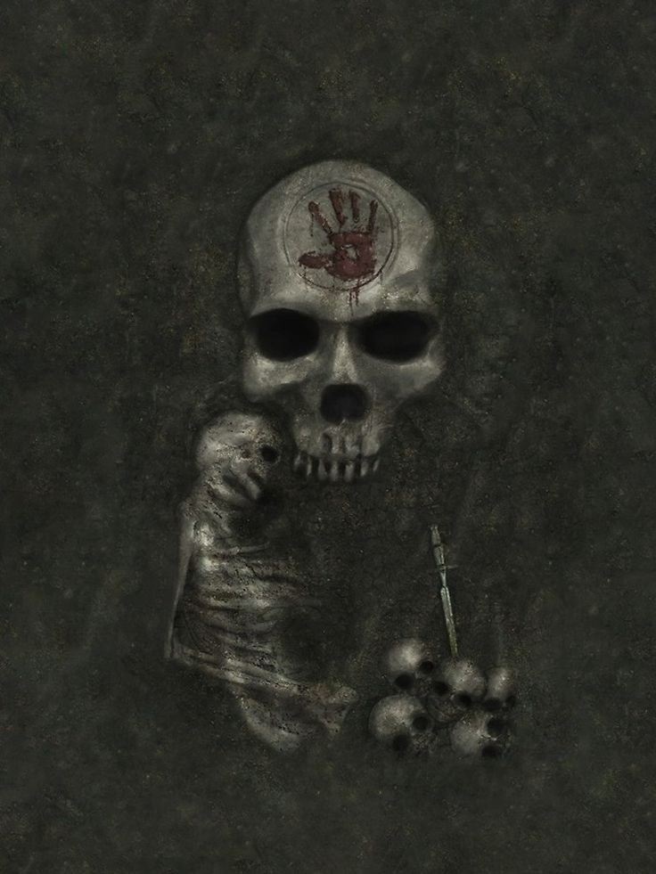

Bir Buse, Tatlı Anam
Kara Kardeşlik, İlkel Kaos Sithis'in takipçisi olduklarını iddia eden bir grup psikopat tarafından yürütülen bir kiralik katiller birliğidir. Bazı rivayetlere göre kökeni Sithis inancına değil, Morag Tong'a dayanmaktadır.
Aslında "katiller birliği" demek yetersiz kalır, Kara Kardeşlik üyeleri birbirlerine
adeta hummalı bir şekilde,
adlarındaki "Kardeşlik"i sonuna kadar hak ederek bağlıdır.
Bunu görmenin en kolay yolu, Kardeşliğin 5 İlkesi'ne bakmaktır.
Kara Kardeşliğin 5 İlkesinden ikisi,
kardeşlerin birbirlerine karşı tutumuyla alakalıdır. Bu, takdir edeceğiniz gibi büyük bir yüzdedir.
Ama sanırsan bunlar seni alakadar etmiyor, sanırsam sen sadece ayini gerçekleştirmek istiyorsun.
O zaman seni bekletmeyelim, oku ve yakar!
(Olur da orijinali istersen, buradan ulaşabilirsin)
Bir Buse, Tatlı Anam
Kara Kardeşliği celp mi etmek istersin? Gönlün birisinin ölümünü mü arzular?
O zaman yalvar, evladım. Yalvar! Yalvar ki Gecenin Anası yakarışlarını duysun.
İşlemen gereken, günahların en büyüğü... Yapman gereken, ayinlerin en gafletlisi...
Kara Ayini gerçekleştirmen, bu Kara Yemini vermen gerek.
Kurbanın bir emsalini hazırla, kemiklerinden kalbine, etinden kafatasına kadar her şeyi içermeli.
Ama gerçek parçalar kullanmalısın evladım, gerçek insan parçaları!
Ardından kurbanı mumlarla çevrele.
Asıl ayin şimdi başlamalı!
İtüzümü yapraklarıyla okşanmış bir bıçakla emsali,
tekraren bıçakla ve yakar!
"Tatlı Anam, Tatlı Anam, kanından olanı ardıma yolla!
Ki alçakların günahları kan ve korkuyla vaftiz olunsun."
Şimdi de bekle evladım, sabret. Dehşetlerin Babası Sithis, sabredenleri ödüllendirir.
Kara Yemini ettin, bu andı kanla imzaladın,
Kardeşliğin sözcüsü seni ziyaret edecek
ve yeminin duyulacaktır.